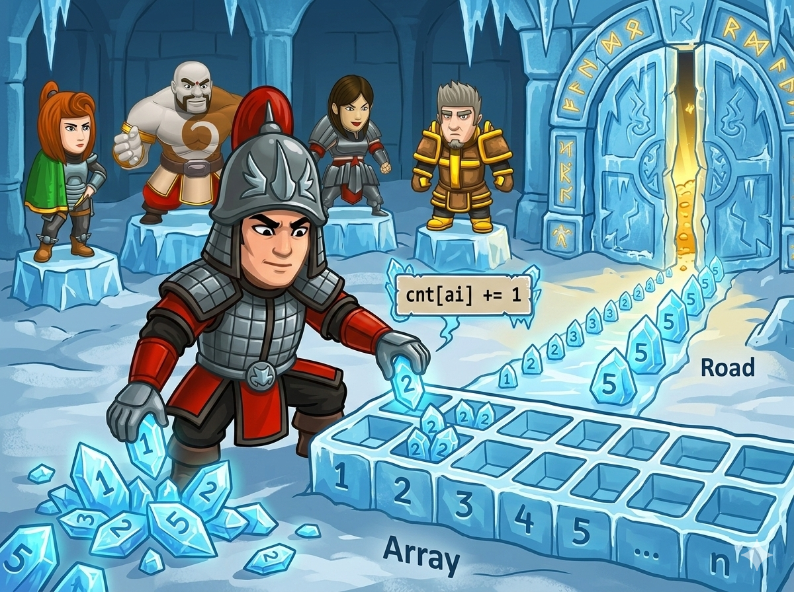

在雪山之巅的雪峰议会，有 n 位守护者（编号从 1 到 n）。今天是大选日，雪民们投下了 m 张会发光的“雪票”。

你的终极任务： 把这茫茫多（最多 2,000,000 张！）的雪票，按照上面的编号 从小到大 排好队。数字整齐闪耀，冰门就会“咔哒”一声打开哦！🗝️
因为雪票的数量超级多（200万张！），如果用普通的排队魔法（比如冒泡排序），电脑会累趴下的！🥵
但是我们发现了一个秘密：守护者的编号很小（最大才999）！ 所以我们可以使用超级魔法——“魔法分类桶 (计数排序)”！🪣
最后按顺序倒出来就是：1，2，2，2，5！是不是超级快？🚀
vector： 以前我们用普通的数组 a[1000]，现在我们可以用 vector<int> cnt(n+1, 0)，这就像是一个能自动帮你把里面全都变成 0 的超级口袋！ios::sync_with_stdio(false);： 当要读入 200万 个数字时，普通的 cin 就像乌龟爬。加上这两句神秘咒语，你的 cin 就会踩上风火轮，瞬间读完所有数据！#include <iostream> #include <vector> using namespace std; int main() { // ⚡ 念动加速咒语，让读入速度飞起来！(必背哦) ios::sync_with_stdio(false); cin.tie(nullptr); int n, m; cin >> n >> m; // 🖥️ 电脑问：有几个候选人？几张雪票？ // 🎒 准备 n+1 个带编号的魔法桶，一开始里面都是0！ // 为什么是 n+1 呢？因为编号是从 1 到 n，我们需要第 n 号桶！ vector<int> cnt(n + 1, 0); // 🌪️ 开启循环，把 m 张雪票一张张读进来 for (int i = 0; i < m; ++i) { int a; cin >> a; // 读到一张雪票上面的编号 a ++cnt[a]; // 往 a 号桶里扔进一颗星星 (计数+1) } // 🚶♂️ 准备倒出桶里的星星啦！ bool first = true; // 这是一个小旗子，标记是不是第一个输出的数字 for (int i = 1; i <= n; ++i) { // 从 1号桶 走到 n号桶 for (int j = 0; j < cnt[i]; ++j) { // 桶里有几颗星，就输出几次 if (!first) { cout << ' '; // 如果不是第一个数字，就在前面加个空格 } cout << i; // 喊出这个数字！ first = false; // 小旗子倒下，后面的数字都不是第一个啦 } } cout << '\n'; // ✨ 华丽地换个行，冰门开启！ return 0; // 任务圆满完成！ }